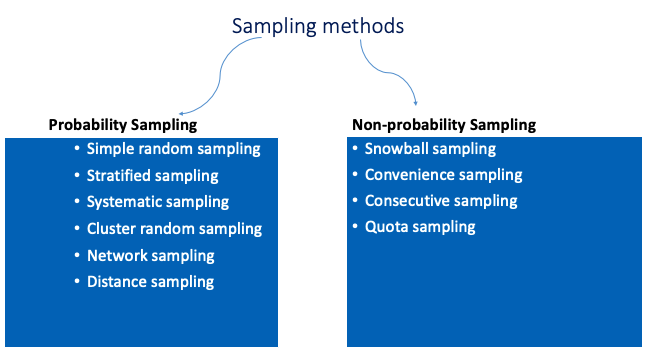

Research Design and proposal writing

Professional Skills Module Conducted by Mrs. Ishari Ravihari
The Professional Skills module, led by the esteemed Mrs. Ishari Ravihari, offers an insightful and engaging experience aimed at empowering individuals with the essential skills for success in today's fast-paced professional world. With her extensive expertise and dynamic approach, Mrs. Ravihari guides students through the crucial aspects of soft skills that go hand-in-hand with technical expertise to shape well-rounded professionals.
What is a Research Design?
“It is the blueprint that is followed to complete the study” and it “ensures that the study is relevant to the problem and will use economical procedure”.
(Kinnear & Taylor, 1996; Churchill & Iacobucci, 2005)
Components of a research design
- Population
- Sample
- Time Frame
- Data Collection Methods
- Data Collection Tools
- Data analysis
Quantitative and Qualitative Research Methods
Qualitative research
Qualitative research is an inquiry process of understanding based on a methodological tradition of inquiry that explores a problem, which enables construction of a complex, holistic picture, analyses words, reports detailed views of informants and conducts the study in a natural setting.
Main types of qualitative research
- Case study
- Phenomenology
- Ethnography
Data collection tools
- Observations
- Interviews (Semi-structured, structured, unstructured)
- Questionnaires (Semi-structured, unstructured)
- Journal entries
Quantitative data tools
- Surveys
- Questionnaires (Structured)
- Experiments
Qualitative Research
Focus: Explores the why and how behind behaviors, experiences, and perceptions.
Data: Descriptive and non-numerical (e.g., interviews, observations, narratives).
Approach: Open-ended and flexible, emphasizing deep understanding.
Outcome: Rich insights, themes, and interpretations.
Quantitative Research
Focus: Measures the what and how much of phenomena.
Data: Numerical and statistical (e.g., surveys, experiments, metrics).
Approach: Structured and objective, emphasizing precision.
Outcome: Trends, correlations, and measurable results.
Mixed Method
Incorporating both qualitative and quantitative methods.
Sampling methods
Data analysis : Use of software
SPSS – Quantitative
SWOT - Qualitative
NVIVO - Qualitative
Decide whether the following research questions should be investigated using qualitative or quantitative methodologies.
What are the cultural practices of new middle –class students in international schools?
What are the viewpoints of stakeholders in an ESL teacher training programme?
What is the most effective way to increase interaction in an ESL classroom?